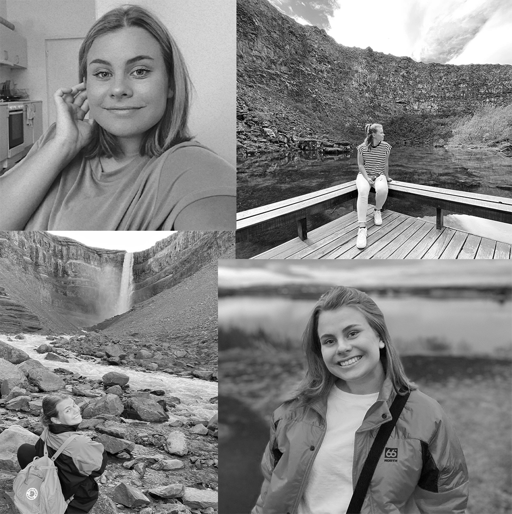

Kort om mig
Hej og velkommen til min portfolio! Jeg hedder Anna og er 21 år gammel. Jeg kommer fra Island men bor i København hvor jeg læser multimedia design på Kea. Jeg elsker at prøve nye tinge og at udfordre mig selv og det har jeg gjort meget på dette semester hvor jeg har studeret i nyt land og et nyt sprog!
Kea bruger gode undervisningsmetoder og jeg føler heldig at have fået mulighed for at studere på Kea. Jeg synes det er sjovt at designe og lave nye websider eller at redesigne eksisterende websider. Det har jeg lært at gøre, grundlæggende på dette semester og jeg glæder mig til at lære mere på næste semester.
